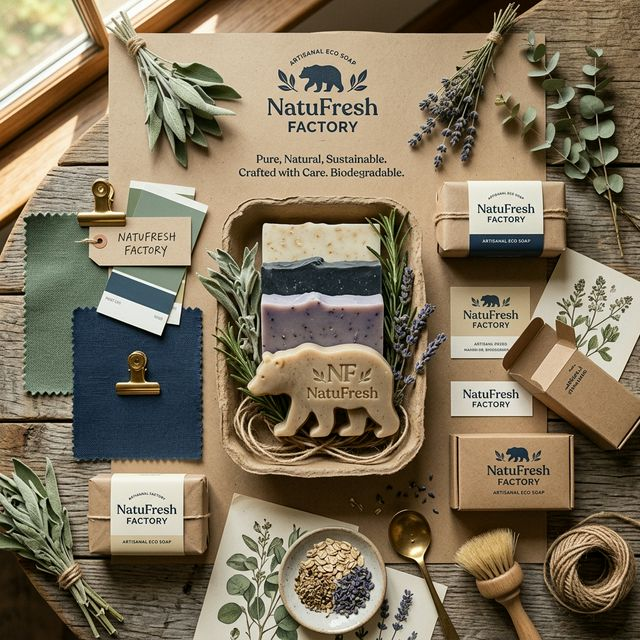

Identidad Comunicacional del Negocio
Estrategia institucional, voz de marca y alineación del lenguaje comercial para NatuFresh Factory S.A.S.

Nuestra Personalidad
Cuatro pilares humanos y corporativos definen el carácter de NatuFresh Factory en cada punto de contacto.
Cercana
Nos comunicamos de manera empática, accesible y humana, construyendo relaciones de confianza genuina con hogares y comerciantes.
Técnica y Confiable
Explicamos los procesos de saponificación y neutralización con rigor técnico claro, demostrando la calidad comprobada de nuestros insumos.
Consciente & Comprometida
Rendimos homenaje a la Economía Circular (Ley 2234 de 2022), visibilizando el impacto positivo de evitar la contaminación del agua.
Educativa
Orientamos activamente a nuestros clientes sobre el manejo responsable del aceite vegetal usado y prácticas de sostenibilidad en la ciudad.
Tono de Comunicación
Directrices claras para adaptar el lenguaje según el contexto e interlocutor del mercado.
| Situación | Tono a Usar |
|---|---|
|
Primer Contacto
|
Cálido, acogedor y explicativo. Se da la bienvenida destacando la innovación ecológica de forma sencilla y motivadora. |
|
Venta B2B (Tiendas / HORECA)
|
Profesional, técnico y enfocado en rendimiento. Se enfatiza la relación costo-beneficio, el volumen de desengrase y certificaciones ecológicas. |
|
Atención de Reclamos
|
Empático, resolutivo, respetuoso y transparente. Se escucha activamente sin defensiva, asumiendo responsabilidad e informando soluciones inmediatas. |
|
Contenido Educativo
|
Dinámico, inspirador, claro e informativo. Utiliza datos estadísticos impactantes sobre el agua para concientizar de manera constructiva. |
|
Comunicación Institucional
|
Formal, sobrio y riguroso. Enfocado en el marco legal (Ley 2234 de 2022), alianzas estratégicas y metas de Economía Circular en Bogotá. |
Manual de Vocabulario
Estándar de conceptos que debemos utilizar y los que debemos evitar para resguardar la reputación de la marca.
-
✓
"Transformación de aceite vegetal usado": Transmite proceso técnico e industrial responsable.
-
✓
"Saponificación y neutralización controlada": Destaca el rigor de laboratorio y eliminación de olores.
-
✓
"Insumo biodegradable de alto rendimiento": Subraya la eficiencia desengrasante e inocuidad.
-
✓
"Economía Circular e impacto hídrico positivo": Relaciona el producto directamente con el cuidado del agua.
-
✓
"Espuma pura e inocua para el hogar": Transmite higiene, frescura y seguridad en el uso diario.
-
✘
"Jabón hecho de grasa sucia o frita": Genera rechazo visual y desvaloriza el estándar de inocuidad.
-
✘
"Químico casero sin certificación": Transmite informalidad o riesgo de irritación física.
-
✘
"Producto barato de residuo tóxico": Asocia la marca con baja calidad en lugar de valor justo.
-
✘
"Jabón común y corriente": Ignora el diferenciador técnico y ambiental de la marca.
-
✘
"Fórmula mágica o empírica de la abuela": Resta credibilidad al proceso estandarizado de 8 etapas.
NATUFRESH FACTORY
Identidad OficialCoherencia de Imagen y Mensaje
En NatuFresh Factory S.A.S., la comunicación verbal está strictly integrada con nuestra propuesta gráfica visual. Cada empaque en cartón kraft reciclable, cada etiqueta minimalista y cada soporte digital reflejan sobriedad, sostenibilidad y honestidad.
No realizamos afirmaciones "greenwashing" ni promesas desmedidas: respaldamos cada mensaje comercial con datos de impacto ambiental reales (mitigación de hasta 1.000 litros de contaminación hídrica por litro de aceite procesado).
Mensajes Modelo
Despliega cada ítem para consultar los guiones oficiales de atención y respuesta a clientes.
"La verdadera sostenibilidad no se construye solo con procesos técnicos impecables, sino comunicando con transparencia, educación y coherencia cada impacto ambiental que generamos."